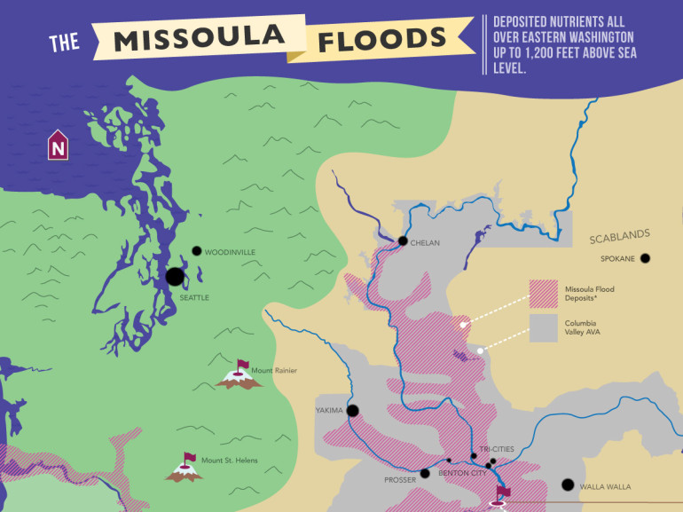

最新酒品浏览
一种让你不得不买的白色的酒，当你一眼看见它会认为它本身就应该是白色的。
更多信息...
Wine is low-carb by nature but that doesn’t mean you’re off the hook! We asked Dr. Edward Miller about carbs in wine and everything you should keep in mind.
更多信息...
You can learn a lot about what type of wine you’re buying based on the style of bottle. Take a look at the major types of wine bottles and what wines tend to be inside.
更多信息...
If you made a wine blend, what would it be? See the most popular white and red wine blends around the world.
更多信息...

Make the a visual connection to how massive floods created Washington’s unique wine terroir. Get simple answers to how soil and terrain makes wines taste the way they do.
更多信息...
See the theory of food and wine pairing in action with this easy to use chart. Then, understand the simple science behind food and wine pairing based on our basic sense of taste.
更多信息...
Let’s break down flavors in wine and classify some familiar wine varieties so you can explore wine through flavor.
更多信息...
Name the 2 top wine varieties you can think of right now, off the tip of your brain. What are they? If you guessed Cabernet Sauvignon and Mer…
更多信息...